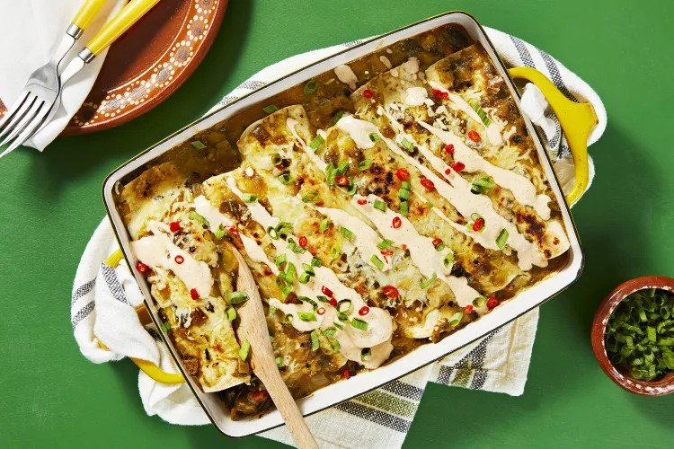

Hello Fresh Salsa Verde Enchiladas Recipe

Description
Saucy, smothered, hearty, and delicious: This enchilada
bake has everything you could possibly want. You’ll make it
by wrapping tortillas around a filling of poblano pepper, tomato,
and beans, then coating the bundles with a healthy glug of mild green
salsa and a sprinkle of Monterey Jack cheese. Put it in the oven and
let it get piping hot and bubbly, and all you’ll have left to do
is add a drizzle of spiced sour cream and dig in to that deliciousness.
- 2 unit Scallions
- 1 unit Poblano Pepper
- 1 unit Roma Tomato
- 13.4 ounce Black Beans
- 1 tablespoon Southwest Spice Blend
- 6 unit Flour Tortillas (ContainsWheat)
- 7.06 ounce Green Salsa
- 1/4 cup Monterey Jack Cheese (ContainsMilk)
- 2 tablespoon Sour Cream (ContainsMilk)
- 1 unit Chili Pepper
- 1 tablespoon Cooking Oil
- 1 tablespoon Butter (ContainsMilk)i
- Salt
- Pepper
- Adjust rack to top position and preheat oven to 475 degrees.
Wash and dry all produce. • Core, deseed, and dice poblano.
Finely dice tomato. Trim and thinly slice scallions, separating
whites from greens. Drain beans over a small bowl, reserving
liquid. Thinly slice chili.
- Heat a drizzle of oil in a large pan over medium-high heat.
Add poblano and cook until just softened, 3-4 minutes.
- Meanwhile, reserve ½ tsp Southwest Spice (1 tsp for 4 servings)
in a second small bowl for step 6. • Once poblano is just
softened, add tomato, scallion whites, half the beans, 2 TBSP
reserved bean liquid (you'll use the remaining beans and more
bean liquid in the next step), and remaining Southwest Spice
to pan. Cook, stirring, until fragrant and warmed through,
2-3 minutes. Season with salt and pepper.
- Heat a large drizzle of oil in a small pot over medium-high
heat. Add remaining beans and cook, stirring, until slightly
softened, 2-3 minutes. • Add 3 TBSP reserved bean liquid
(1/3 cup for 4 servings). (You may have some bean liquid
left over.) Simmer until warmed through, 1-2 minutes.
• Reduce heat to low and stir in 1 TBSP butter (2 TBSP for 4).
• Turn off heat; mash with a potato masher or fork until mostly
smooth. Season with plenty of salt and pepper.
- Spread tortillas with mashed beans. Place a small amount of
filling on one half of each tortilla. Roll up tortillas,
starting with filled sides, and place seam sides down in an
8-by-11-inch baking dish or ovenproof pan. (For 4 servings,
place in a 9-by-13-inch baking dish or two smaller ones.)
• Spoon enough salsa over to generously coat (you may have
some left over). Sprinkle with Monterey Jack. • Bake on top
rack until salsa is bubbly and cheese melts, 3-5 minutes.
- While enchiladas bake, add sour cream to bowl with reserved
Southwest Spice. Stir in warm water 1 tsp at a time until
mixture reaches a drizzling consistency. Season with salt and
pepper. • Top baked enchiladas with crema, scallion greens,
and as much chili as you like. Divide between plates and serve.